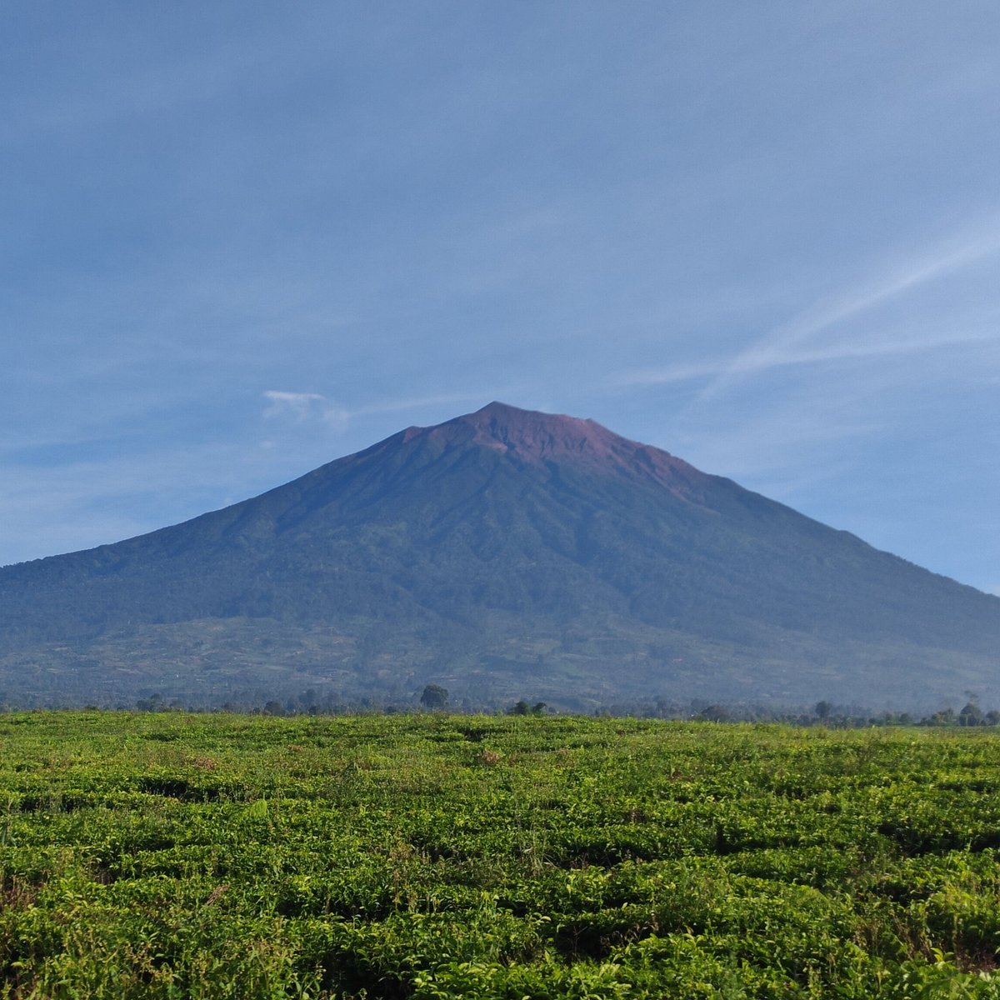

Keindahan Alam
Jambi memiliki keindahan alam yang menakjubkan, dari Gunung Kerinci yang merupakan gunung tertinggi di Sumatera, Danau Sipin di tengah kota, hingga Sungai Batanghari yang legendaris. Taman Nasional Kerinci Seblat menjadi rumah bagi flora dan fauna langka yang dilindungi.
Lihat wisata alam